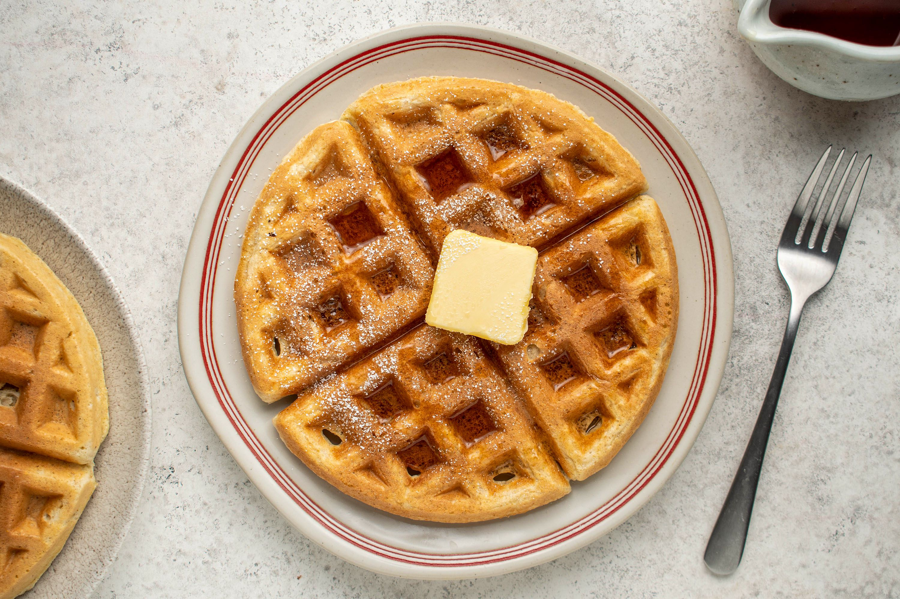

Saturday Morning Waffles

Description
Yummy waffles for Saturday morning.
Yum yum yum yum!
Ingredients
- 1/3 cups all purpose flower
- 4 teaspoon baking powder
- 1/2 teaspoon of salt
- 1/2 cup of butter, melted
- 2 tablesppons white sugar
- 2 eggs separated
- 1 egg yolk
Directions
- Whisk together dry ingredients in large mixing bowl.
- Add egg yolks to dry ingredients, white whites in small mixing bowl.
- Beat whites until moderately stiff; setasise.
- Add milk and melted butter to dry ingredients and blend.
- Fold stiff egg whites into mixture.
- Ladle into hot waffle iron.